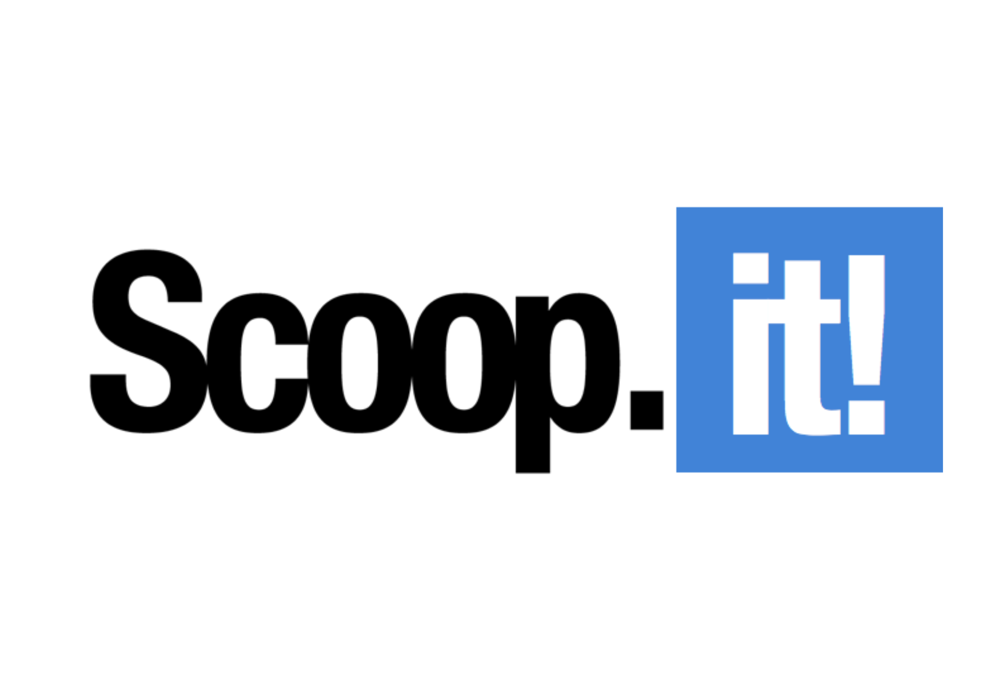

Veille Technologique
Qu'est ce qu'une veille ?

|
Une veille est un processus continu entre suivi et observation conçu pour collecter, analyser et interpréter des informations pertinentes provenant de diverses sources. Et donc, une veille technologique consiste à s'informer en continu sur les nouveautés du secteur informatique, les inventions des concurrents ainsi que les nouvelles technologies et en conclusion, de devenir le meilleur dans son domaine. |
Représentation de ma Veille Technologique :
Pour retrouver la veille technologique sous forme de carte mentale cliqué ici :
Illustration d'une curation :
|
Scoop.it est une plateforme de curation de contenu en ligne qui permet aux utilisateurs de découvrir, organiser et partager des articles pertinents sur des sujets spécifiques, facilitant ainsi la veille et le partage d'informations ciblées. |
 |